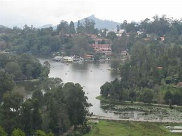

Must See Sites
Ooty Botanical Gradern

Often referred to as Queen of hill stations, Ooty is one of the best hill stations in India and also one of the top places to experince Tamilnadu Tourism. At an altitude of 7,440 feet, Ooty is situated at a distance of 265 km from Bangalore. A nature lover's paradise, Ooty was a popular summer and weekend getaway for the British during colonial days. The rolling hills, lush green vegetation and the misty landscapes attract large number of tourists to this hill station. Ooty Lake, Botanical Garden, Wenlock Downs, and Rose Garden are among the must include places in Ooty tour packages. The toy train, known as Nilgiri Mountain Railway that runs from Mettupalayam to Ooty is a UNESCO World Heritage Site and a must be experienced.
kodai lake
Often referred to as the Princess of Hill stations, Kodaikanal or Kodai is one of the top tourist destinations in Tamilnadu tour packages and among the best hill stations in South India. It is located at a distance of about 469 km from Bangalore & 528 km from Chennai. At an altitude of about 7000 feet (2133 m) amidst the rolling slopes of the Palani Hills, Kodai has several scenic natural attractions that are enjoyed by its visitors and make it a popular romantic destination. Kodaikanal is not extensively commercialized like Ooty and it offers a pleasant experience to tourists with relatively less crowd. Kodai Lake, Bryant Park, Coaker's Walk, Bear Shola Falls, Silver Cascade, and Pillar Rocks are the top places to visit as part of Kodaikanal tour packages
Ranganathaswamy Temple

Situated on the banks of the Cauvery River, Tiruchirappalli or Trichy is the 4th largest city in Tamilnadu and among the top places to visit as part of Tamilnadu tour packages. It is located about 133 km from Madurai and 334 km from Chennai. Tiruchirappalli is home to numerous historical monuments and temples that attract tourists and pilgrims from all parts of the country throughout the year. The city played a critical role in the Carnatic Wars (1746-1763) between the British and the French East India companies. Ranganathaswamy Temple at Srirangam, one of the most famous pilgrimage centers in South India is situated near Trichy. Rockfort Temple, Jambukeshwar Temple, Uraiyur, Mariamman Temple, Government Museum and the St John's Church are some .....
Mahabalipuram

Mahabalipuram, also called Mamallapuram is one of the must-visit weekend getaways from Chennai for one day trip. This is one of the UNESCO heritage site in Tamil Nadu and one of the best places to experience Tamilnadu Tourism. It is about 57 km from Chennai. Famous for its Shore Temple built in 7th century, Mahabalipuram was the second capital of the Pallava kings of Kanchipuram. It is known for its historical monuments, sculptures, scenic beauty, culture and tradition. The famous Arjuna's Penance, the Krishna Mandapa, Thirukadalmallai temple, Cholamadal Artist's Village, Mahabalipuram Beach, Tiger Cave and Crocodile Bank are the .....